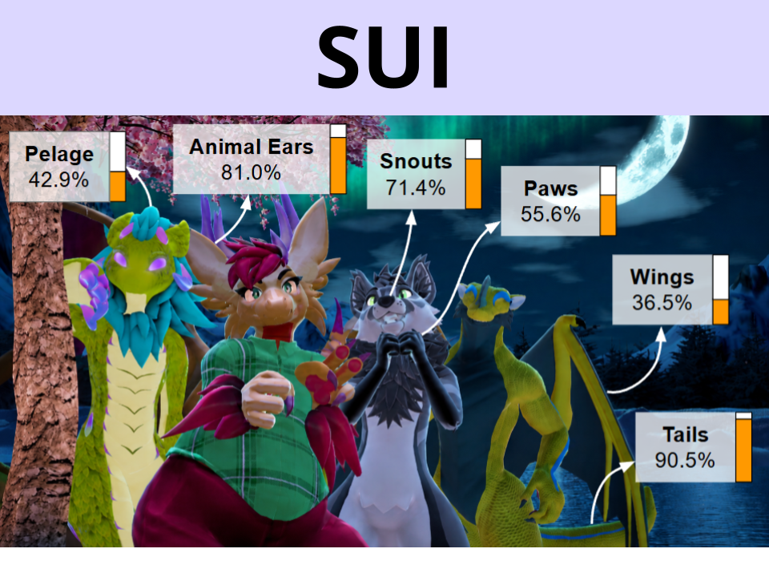

About Me
I am a Ph.D. student in Computer Science at Drexel University, Philadelphia, USA. I am advised by Dr. Tiffany D. Do as a member of the DIVA Lab. I am broadly interested in embodiment, interaction, and perception in XR (AR, VR, MR), with a focus on avatars, social VR, multisensory perception, body perception, haptics, and tangible/physical user interfaces, all within the larger scope of human-centered computing.
I am trained in designing and implementing XR systems across the reality-virtuality continuum, and conducting user studies to extract insights on how next-generation spatial computing interfaces shape human perception and behavior. My work has been published in the prestigious IEEE TVCG journal, and presented at flagship conferences such as IEEE VR, IEEE ISMAR, and ACM CHI.
I graduated with a B.Sc. with First-Class Honours in Computer Science from the University of Calgary, in Canada. Throughout my time there, I did research in avatars under the supervision of Dr. Kangsoo Kim as a member of the HXI Lab.
News
- June 2026: One TVCG paper accepted to IEEE ISMAR 2026, and one poster accepted to ACM SUI 2026!
- April 2026: Gave an invited talk at Stony Brook University!
- February 2026: One poster accepted to ACM CHI 2026!
- January 2026: One TVCG paper accepted to IEEE VR 2026!
- October 2025: Presented my TVCG paper at IEEE ISMAR 2025, received an honorable mention, and served as a student volunteer!
- September 2025: Joined Drexel University as a Ph.D. Student!
Journal Articles


Influence of Avatar Appearance and Target Distance on Locomotion Method Selection in Virtual Reality
Omar A. Khan, Junyeong Kum, Hyeongil Nam, Myungho Lee, Kangsoo Kim
IEEE Transactions on Visualization and Computer Graphics (TVCG), vol. 32, no. 5, pp. 4668-4677, 2026.
Acceptance rate: 20%
Impact Factor: 6.8

🏅Honorable Mention for Best Paper Award at IEEE ISMAR 2025 (Top 3%)
Impact of Avatar-Locomotion Congruence on User Experience and Identification in Virtual Reality
Omar Khan, Hyeongil Nam, Kangsoo Kim
IEEE Transactions on Visualization and Computer Graphics (TVCG), vol. 31, no. 11, pp. 9878–9888, 2025.
Acceptance rate: 8%
Impact Factor: 6.8
Extended Abstracts and Workshop Papers


Exploring Experiential Differences Between Virtual and Physical Memory-Linked Objects in Extended Reality
Zaid Ahmed, Omar A. Khan, Hyeongil Nam, Kangsoo Kim
Proceedings of ACM CHI Conference Extended Abstracts on Human Factors in Computing Systems (CHI EA), no. 269, pp. 1-5, 2026.
Acceptance rate: 38%
ICORE conf. rank: A*


Exploring the Impact of Virtual Human and Symbol-Based Guide Cues in Immersive VR on Real-World Navigation Experience
Omar Khan, Anh Nguyen, Michael Francis, Kangsoo Kim
Proceedings of the IEEE Conference on Virtual Reality and 3D User Interfaces Abstracts and Workshops (IEEE VRW), pp. 883–884, 2024.
Academic Service
- External reviewer for ACM VRST 2025-26 and IEEE ISMAR 2026.
- Student volunteer at IEEE ISMAR 2025.
- Event coordinator for the Doctoral Student Association of Drexel College of Computing and Informatics, 2026-27.
Facts
- I am Canadian. I was born and raised in Mississauga, but spent my high-school and college years in Calgary. 🍁
- I love gaming. My favorite video games are Elden Ring, Deltarune, and Outer Wilds. 🪐